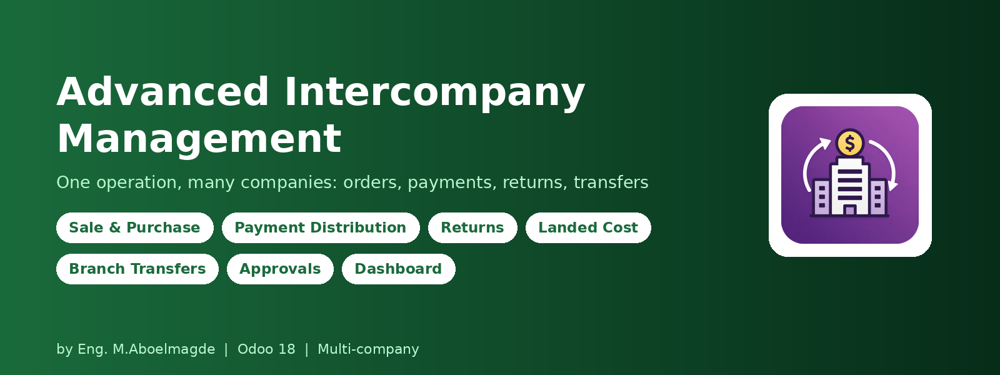
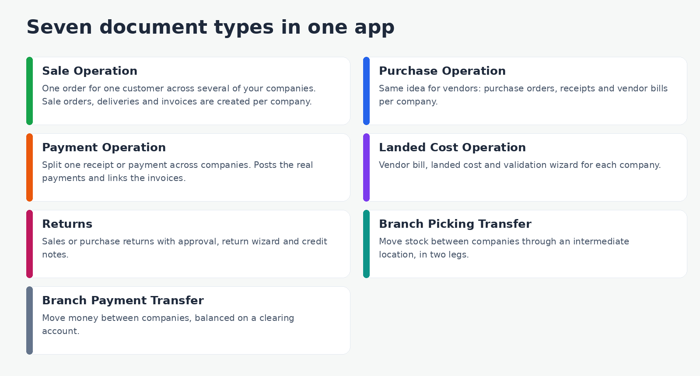
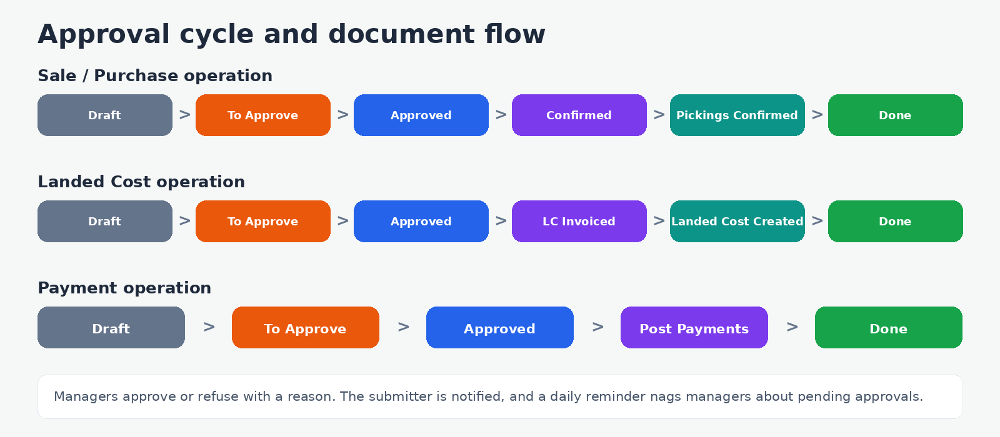
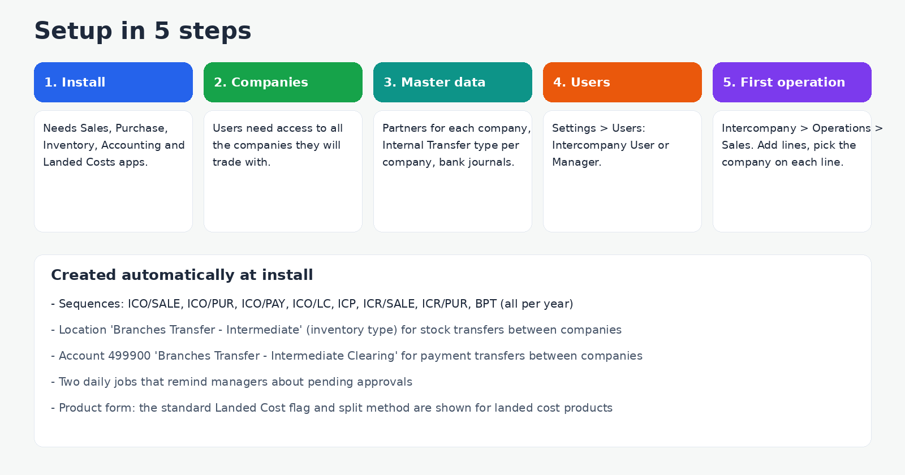

Trade between your own companies from a single screen
Groups of companies sell to each other, buy for each other, collect payments together and move stock and money between branches. In standard Odoo that means switching company again and again and keeping track of many separate documents by hand. This module lets you enter one operation, pick the company on each line, and it creates the right sale orders, purchase orders, deliveries, invoices and payments in each company, with approvals and a dashboard on top.
What is inside

- Sale and Purchase operations: lines are grouped by company automatically, then one order per company is created with its own delivery or receipt and invoice. Pricelist, payment terms, currency (with the accounting rate shown), discount and taxes per line.
- Payment operations: split one receipt or payment across companies, choose the journal and amount per company, link the invoices or bills each part settles, and post all the real payments in one click. The share of each company is shown as a percentage.
- Landed Cost operations: create the vendor bills, turn the landed cost products into Odoo Landed Costs per company and validate them from one wizard.
- Returns: sales or purchase returns for individual orders or for a whole grouped operation, with a wizard that shows original, already returned and maximum returnable quantities, and credit notes for the net returned value.
- Branch Picking Transfer: move stock from one company to another in two legs through an intermediate location, each leg a real internal transfer in its own company.
- Branch Payment Transfer: send money from one company's bank or cash journal to another's, posted as two real payments balanced on a clearing account.
- Smart buttons on every operation open its orders, pickings, invoices, payments and landed costs.
Approval cycle

- Users submit, Managers approve. A Manager can also Refuse with a written reason: the operation goes back to Draft and the submitter is notified.
- Nothing is created in the other companies until the operation is approved.
- A daily job reminds Managers about operations, payment distributions, returns and transfers still waiting for approval, and a Pending Approvals menu lists them.
- Cancel is blocked once a related delivery is done. Every document has a chatter and keeps the full history.
Dashboard and reports
- Live dashboard with KPI cards for operations, sales, purchases, landed costs, payments, returns and both kinds of branch transfer, plus pending approvals.
- Pipelines by status for operations, payment distributions, returns and transfers, a six-month chart of amounts by type, and a list of recent operations. Light and dark mode.
- Intercompany Report (Reporting menu) with pivot, graph and list, filters by type and date, and group by product, partner, company or type.
- PDF print for operations, returns, payment distributions, picking transfers and payment transfers.
Configuration guide

Step 1: Install
The module needs the Sales, Purchase, Inventory, Accounting and Landed Costs apps. On install it creates everything it needs: the yearly sequences (ICO/SALE, ICO/PUR, ICO/PAY, ICO/LC, ICP, ICR/SALE, ICR/PUR, BPT), the intermediate stock location, the clearing account and the daily reminder jobs.
Step 2: Companies and partners
- Every user who works with the module must be allowed on all the companies involved.
- Create one partner per company that trades with another (the other company is a customer or a vendor).
- A line's company cannot be the same as the operation's partner company: the module blocks that, since a company cannot trade with itself.
Step 3: Stock and accounting prerequisites
| Needed for | What to check |
|---|
| Branch Picking Transfer | Each company must have an Internal Transfers operation type linked to a warehouse. If one is missing, the module stops with a clear message instead of posting to the wrong company. |
| Branch Payment Transfer | Each company needs a bank or cash journal. They are filled in automatically when you choose the company. The default clearing account is 499900 "Branches Transfer - Intermediate Clearing"; you can choose another reconcilable account on the transfer. |
| Payment operations | Journals for each company, and posted invoices or bills to link (optional). |
| Landed Cost operations | Mark the products as landed cost products (the standard "Can be a Landed Cost" flag, shown on the product form) and choose their split method. |
| Sale and Purchase operations | Products, prices, taxes and delivery or receipt operation types in each company, as for any normal sale or purchase. |
Step 4: Users and roles
In Settings > Users, assign Intercompany Operations: User or Manager.
| Action | User | Manager |
|---|
| See operations, returns, payments and transfers of allowed companies | Yes | Yes |
| Create and edit, submit for approval | Yes | Yes |
| Approve, Refuse with reason | No | Yes |
| Approve branch picking and payment transfers | No | Yes |
| Cancel returns | No | Yes |
| Delete documents | No | Yes |
| Pending Approvals menu | No | Yes |
Record rules limit each user to the companies they are allowed on.
Step 5: Your first operation
- Go to Intercompany > Operations > Sales and click New. The reference (ICO/SALE/year/...) is generated automatically.
- Choose the customer, date, currency, pricelist and payment terms.
- Add lines: pick the company that sells each product, the product, quantity and price. Use Update Prices to refresh prices and taxes from the pricelist.
- Press To Approve. A Manager presses Approve.
- Press Create Documents, then Confirm Stock Pickings, then Create Invoice. The operation is Done and its orders, deliveries and invoices are one click away.
Technical details
- Odoo 18.0, Community and Enterprise, multi-company. Depends on sale_management, purchase, stock, account and stock_landed_costs.
- License: Odoo Proprietary License v1.0 (OPL-1).
- PDF prints use Odoo's standard PDF engine (wkhtmltopdf).
- Includes automated tests for operations and payment distribution.
Frequently asked questions
Do I need a separate Odoo database per company? No. This works inside one database with several companies.
Why can't I create documents? The operation must be approved by a Manager first.
The picking transfer says no Internal Transfer type was found. Open Inventory > Configuration > Operation Types while on that company and make sure an Internal Transfers type exists and is linked to a warehouse.
Can I use it without the Accounting app? No. Invoices, payments and landed costs need it.
Support
Bug-fix updates are included. Installation, configuration and customization support: Eng. M.Aboelmagde (YouTube: Odoo Lab, @odoolab).